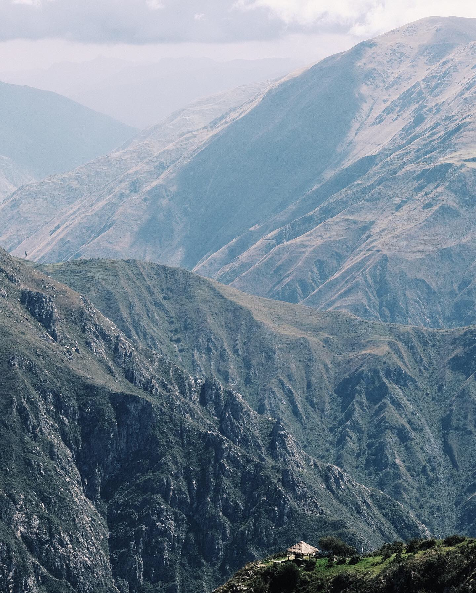
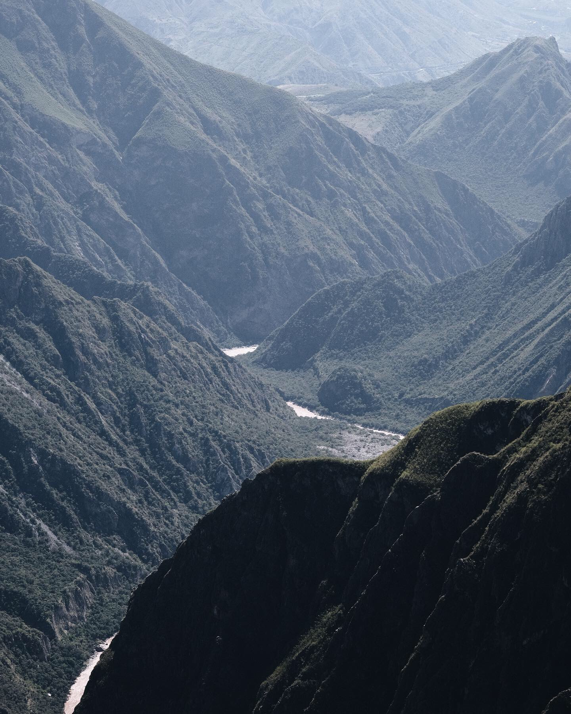
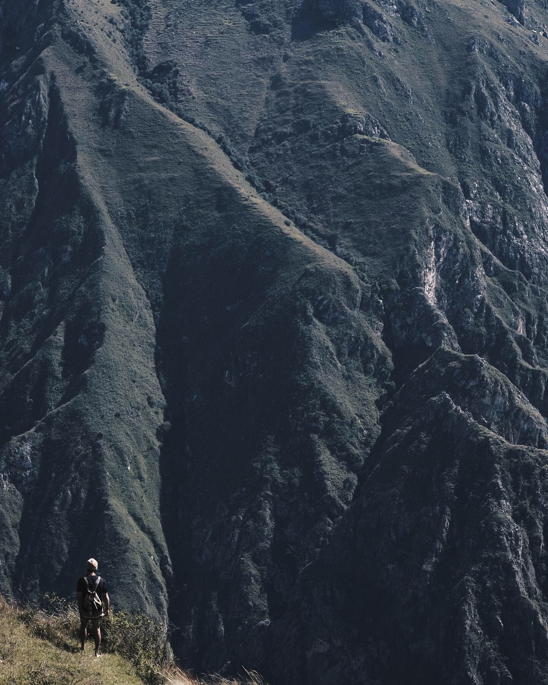
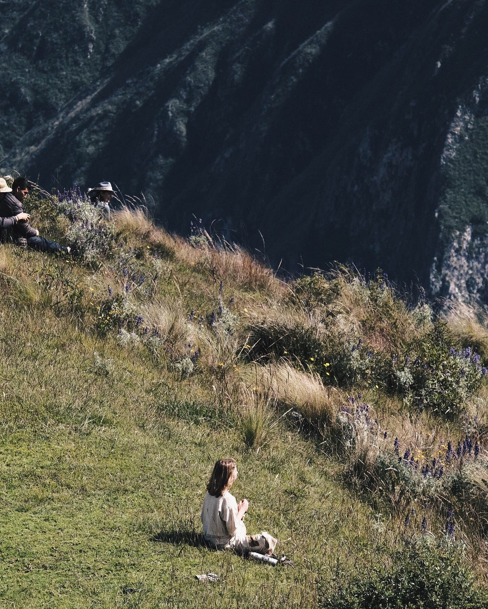
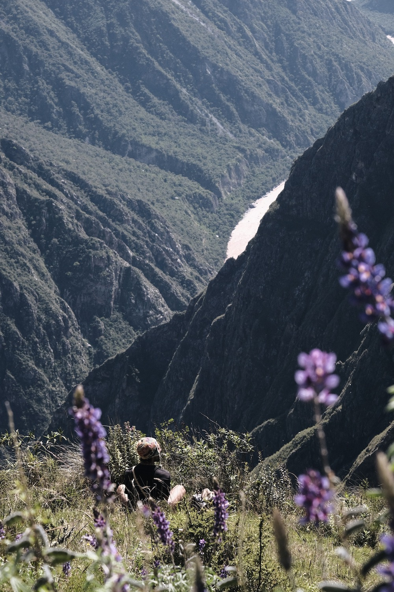

29 March 2022 • posted by Dasha
Above the head and beyond the sky
Тишина плавится под солнцем. Выше 4000 метров времени не существует. Момент настолько полон существованием и разнообразием, наполняющим твои глаза, что места для мыслей в голове не остаётся.
Каньон, где гнездятся Кондоры. Здесь их крылья касаются звёзд и чертят линию горизонта. 4 часа путешествия от Куска, из которых один час по диким местам, где только деревья шепчут на ветру. А затем среди пиков скалистых гор вырастает маленькая деревушка. Поселение призраков или древних богов, чей дух летает с кондорами там, где человеческому телу нет места. Девочка Виктория лет 13 встречает нас и просит записать имена в старенькую тетрадь, чтобы если мы - белые дети городов - потерялись, нас пошли искать.
В деревне около 20 семей, 10 коров и стадо овец. Их жизнь чертит ровную линию круга жизни, дыша гармонией с Матерью Землёй. Их же дух, не знает линий и границ, принимая правила игры и наслаждаясь моментом на Земле. Я уверена эти люди умеют телепортироваться (может, конечно, не растворяться в пространстве, но покидать тело, давая ему указание идти).
Это жизнь. А то, что мы знали, - сон. Просыпайтесь.
•
Silence melts under the sun. Above 4,000 metres time does not exist. The moment is so full of existence and variety floating into your eyes that there is no room for thoughts in your head.
The canyon where the Condors nest - Chonta Canyon. Here their wings touch the stars and trace the skyline. Four hours of travel from Cusco, of which one hour through wilderness where only trees whisper in the wind, and then a small village grows up among the peaks of the rocky mountains. A settlement of ghosts or ancient gods whose spirits fly with condors where the human body has no place. Girl Victoria, about 13 years old, meets us and asks us to write down the names in an old notebook, so that if we - white children of the cities - were lost, local went looking for us.
The village has about 20 families, 10 cows and a flock of sheep. Their life draws an even line of the circle of life, breathing in harmony with Mother Earth. Their spirit, on the other hand, knows no lines or boundaries, accepting the rules of the game and enjoying the moment on Earth. I'm sure these people are able to teleport (maybe not dissolve into space, of course, but leave the body, giving it instructions to go).
This is life. And what we knew was a dream. Wake up.




